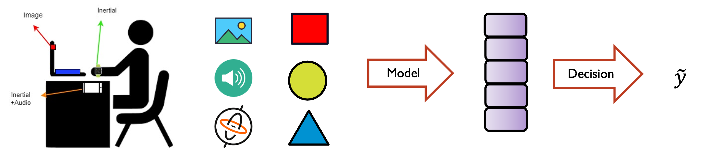

This paper aims to improve human activity recognition (HAR) with multimodal data across multiple consumer devices in a smart workplace environment. By leveraging the sensor-rich capabilities of smartphones, smartwatches, and smart speakers, we propose Collaborative Multimodal Federated Learning (CoMFL) algorithm to facilitate efficient feature encoding on lightweight local models implemented on consumer devices while fusing these encoded features for training a super model on a personalized local server, all within the private zone of a user. Federated learning aggregates model updates across users without compromising privacy, resulting in a generalized global super model. Additionally, we address the challenge of missing modality by incorporating a feature reconstruction network. This network attempts to reconstruct missing modalities prior to feature fusion, improving performance when dealing with missing features. Our proposed CoMFL achieves significant performance gains with multimodal HAR systems.
Human activity recognition (HAR) has witnessed rapid advancement with the proliferation of consumer devices embedded with heterogeneous sensors that capture multimodal data providing richer contextual information for HAR in realworld scenarios. However, data over communication networks is distributed over different devices and users are reluctant to share their private data with a second party. In this regard, mplementing a multimodal HAR system across heterogeneous devices within smart workplace environments presents several challenges: 1) effective fusion of multimodal data to build a unified model for all modalities is challenging particularly due to cross-modal data heterogeneity and the asynchronous nature of data sampling across devices, and 2) inaccessibility to diverse data from different users degrades the generalization performance of the HAR model. 
Our proposed CoMFL consists of Intra-zone for local collaborative training between local devices enabling efficient processing of multiple modalities from multiple devices, and Inter-zone for facilitating global federated learning,
We examine a scenario involving N = 28 individuals engaged in 9 distinct activities. This data was collected through our data collection campaign, with the informed consent of all participants. For each device, we use 2 CNN layers with 64 and 32 and filters of size 3 × 3 and max-pooling 2 × 2. The super model is composed of two fully-connected layers with 64 and 32 neurons, respectively.
Our simulation results shows a) phone modality reaches the best performance among unimodal HAR models, b) integrating multi-modality enhances accuracy of the model, c) the distributed learing approach results in a less accurate model compared to the centralized setting with the benefit of retaining data privacy.
We consider a scenario where one of the modalities is missing due to hardware or communication failure. WE compare (i) baseline where we replace the missing modality with zeros, and (ii) the missing data is reconstructed using the proposed method. As can be seen from the table, phone modality has the highest effect on the model performance. However, in practice, we observed that the smartwatch usually fails to provide its captured data
@article{Sheikholeslami_CoMFL2024,
title={Towards Collaborative Multi-modal Federated Learning for Human Activity Recognition in Smart
Workplace Environments},
author={Sheikholeslami, Seyed Mohammad and Ng, Pai Chet and Liu, Huan and Yu, Yuanhao and Plataniotis, Konstantinos N.},
journal={IEEE International Conference on Acoustics, Speech and Signal Processing Workshop (ICASSPW)},
year={2024}
}